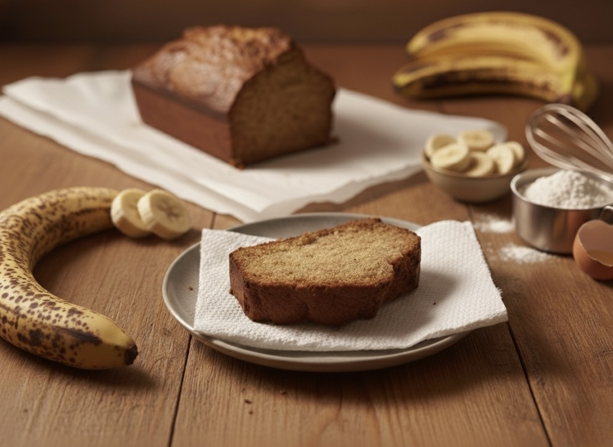

Banana Bread
The Story
Banana bread is a true icon of American ingenuity. During the Depression, this once-exotic tropical fruit became surprisingly accessible due to massive import operations by companies like the **United Fruit Company**. For the first time, bananas were a common household item.
But this created a new "problem": what to do with them when they became "overly ripe"? For a resilient, grass-roots household, throwing them out was not an option. That would be like throwing away money. The blacker, softer, and "failed" the banana, the more concentrated its sugars became. A frugal mind saw this not as "rot," but as an *opportunity*.
This recipe is the result: transforming a "wasted" asset into a much-needed, high-value luxury—a sweet, moist, and comforting treat. It's the "Dignity Premium" in action, a way to create joy and abundance from the scraps of a centralized supply chain.
The Recipe
Prep Time: 15 mins
Cook Time: 45 mins
Serves: 8
The following recipe has been inspired by a lot of trial an error resulting in a robust predictable result.
Ingredients
- 3 - 4 mashed overripe bananas
- ½ - ⅔ cup brown sugar
- ½ cup butter, softened
- 3 large eggs, beaten
- ½ teaspoon vanilla (optional)
- 2 cups all-purpose flour
- 1 teaspoon baking soda
- ¼ teaspoon salt
- ½ teaspoon cinnamon
Instructions
- Preheat the oven to 350°F
- Prepare the desired loaf pan with light greasing
- In a large bowl, whisk together the flour, baking soda, salt, and cinnamon.
- In a separate large bowl, beat the brown sugar and butter by hand or with a mixer until smooth.
- Stir in the beaten eggs and the mashed bananas until well blended.
- Pour the wet banana mixture into the dry flour mixture. Stir *only* until just combined. Do not overmix.
- Pour the batter into the prepared loaf pan.
- Bake in the preheated oven for 45-60 minutes, or until a toothpick inserted into the center comes out clean.
- If the edges seem overly browned turn it out onto a wire rack to cool immediately, otherwise you can feel free to let it sit for a few minutes before removing from the loaf pan.
The Economic Lesson
Principle: True wealth is the ability to see value and create dignity where others see only waste.
The overripe banana is a "failed" asset. In a rigid, top-down system, it is a "loss" to be written off. But in the free and adaptable "trading kitchen" of a real home, the resilient individual knows that this "failure" is actually a *transformation*. The asset hasn't been lost; it has merely *changed forms*, becoming sweeter and more flavorful.
This is the essence of human dignity and sovereignty. A person who is dependent on a central system needs "perfect" bananas delivered on time. A free person, endowed by God with ingenuity, can take the "imperfect" assets that a broken system discards and *create a higher standard of living* from them. This is the ultimate adaptation: finding profit and joy in the "failures" of the old system.
Learn more at The Trading Post →